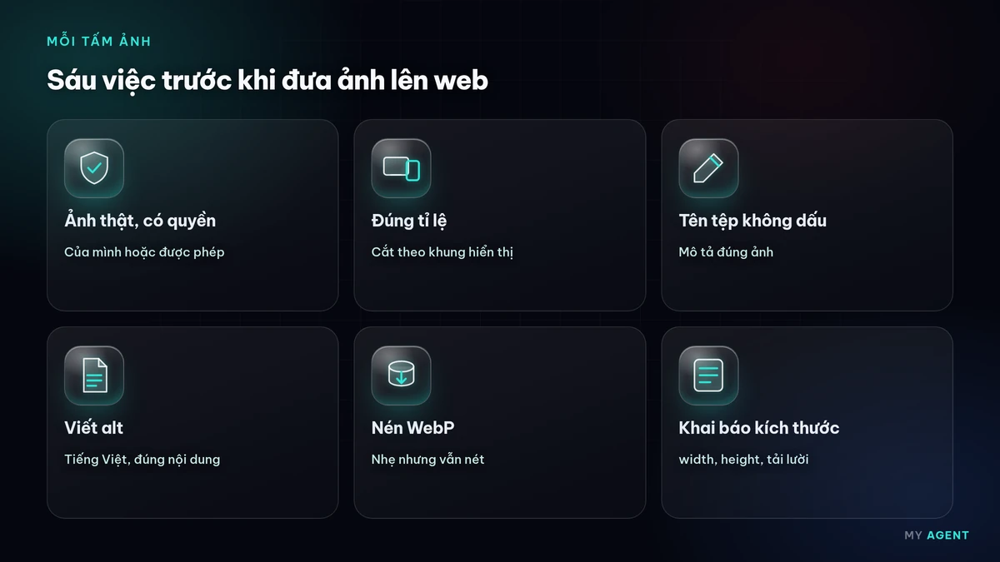
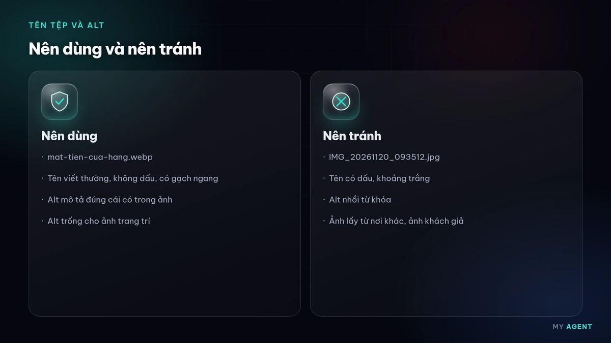
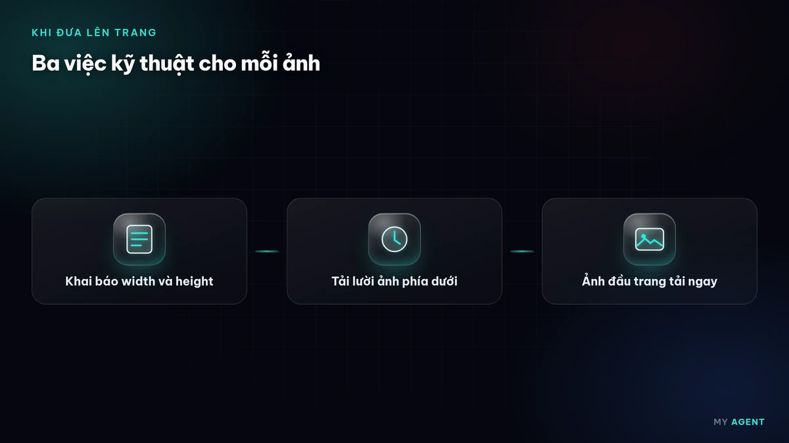

Ảnh thường là thứ khách nhìn thấy đầu tiên trên website, và cũng thường là phần nặng nhất của trang. Một tấm ảnh thật, rõ, đúng chỗ giúp khách tin hơn; một tấm ảnh mờ, lấy từ nơi khác hay nặng vài megabyte thì làm trang chậm và khó tin. Bài này đi qua từng việc với một tấm ảnh trước khi đưa lên web: chọn ảnh, cắt cỡ, đặt tên, viết mô tả, nén và khai báo kích thước. Cách làm giống nhau cho quán cà phê, cửa hàng vật liệu xây dựng, spa, xưởng gỗ hay văn phòng kế toán.
Phần gom ảnh và tài liệu trước khi làm web nằm ở bài cần chuẩn bị gì trước khi làm website; các nguyên nhân khác làm web chậm (hosting, plugin, bộ nhớ đệm) nằm ở bài tốc độ website cơ bản. Ở đây chúng tôi chỉ tập trung vào ảnh.

1. Chọn ảnh thật và có quyền sử dụng
- Ưu tiên ảnh của chính doanh nghiệp: nơi làm việc, sản phẩm, công việc đã làm, quy trình. Khách nhận ra ảnh thật và tin hơn ảnh mẫu.
- Chỉ dùng ảnh có quyền: do mình chụp, do người chụp đã đồng ý cho dùng, hoặc ảnh từ kho có giấy phép rõ ràng. Lưu lại giấy phép hoặc lời đồng ý để khi cần còn đối chiếu.
- Ảnh có người (khách, nhân viên) chỉ dùng khi họ đồng ý.
- Không dùng ảnh người khác như thể của mình: ảnh tải từ mạng, từ website đối thủ, hay ảnh người mẫu để làm "khách hàng". Không dùng ảnh chụp màn hình đánh giá hay tin nhắn tự dựng.
- Ảnh minh họa, sơ đồ tự vẽ dùng tốt cho phần giải thích, miễn là không giả làm ảnh thật.
2. Đúng kích thước và tỉ lệ
Ảnh chụp từ điện thoại thường rộng hơn nhiều so với chỗ hiển thị trên web. Trước khi đăng, nên:
- Cắt theo tỉ lệ khung mà trang dùng: ảnh bìa ngang (như 1200×630 cho ảnh chia sẻ mạng xã hội), ảnh trong bài 16:9, ảnh sản phẩm thường vuông. Giữ cùng tỉ lệ cho cùng một loại ảnh để lưới sản phẩm không bị lệch.
- Thu nhỏ về bề ngang vừa đủ: không cần lớn hơn nhiều so với khung hiển thị lớn nhất. Người làm web có thể tạo thêm vài cỡ để trình duyệt chọn theo màn hình.
- Giữ chủ thể ở giữa để khi cắt cho điện thoại, phần quan trọng không bị mất.
3. Đặt tên tệp không dấu, mô tả đúng nội dung
Tên tệp như IMG_20261120_093512.jpg không nói gì với người quản trị lẫn công cụ tìm kiếm. Nên đặt tên:
- Viết thường, không dấu, nối bằng gạch ngang:
ban-go-soi-phong-khach.webp,mat-tien-cua-hang.webp. - Mô tả đúng ảnh, ngắn gọn; không nhồi từ khóa.
- Thống nhất cách đặt tên theo trang hoặc theo nhóm sản phẩm, để dễ tìm và thay ảnh sau này.
4. Viết alt (văn bản thay thế) đúng nội dung ảnh
Alt là đoạn chữ mô tả ảnh, được đọc cho người dùng trình đọc màn hình và hiển thị khi ảnh không tải được. Google cũng dùng alt cùng nội dung xung quanh để hiểu ảnh, theo hướng dẫn về SEO hình ảnh của Google.
- Viết tiếng Việt có dấu, mô tả cái thực sự có trong ảnh: "Kệ gạch ốp lát mẫu vân đá tại cửa hàng", không phải "gạch đẹp giá rẻ uy tín".
- Ảnh có chữ quan trọng (như bảng giờ mở cửa) thì alt nên ghi lại nội dung chữ đó.
- Ảnh chỉ để trang trí thì để alt trống, để trình đọc màn hình bỏ qua.

5. Nén ảnh và dùng định dạng WebP
- WebP thường cho tệp nhẹ hơn JPEG hay PNG ở cùng độ nét, và được các trình duyệt phổ biến hỗ trợ. Tài liệu chính thức có ở trang WebP của Google.
- Nén nhẹ: giảm chất lượng vừa phải rồi xem lại ở cỡ thật. Nếu chưa thấy vỡ hay nhòe thì giữ mức đó; nén quá tay làm ảnh sản phẩm mất chi tiết.
- Logo, biểu tượng nên dùng SVG nếu có, hoặc PNG/WebP nền trong.
- Với WordPress hay nền tảng tương tự, có thể dùng chức năng tạo nhiều cỡ ảnh và nén sẵn của hệ thống, miễn là kiểm tra lại kết quả.
6. Khai báo kích thước và chỉ tải ảnh khi cần
- Ghi rõ chiều rộng và chiều cao (
widthvàheight) cho mỗi ảnh. Trình duyệt giữ sẵn chỗ cho ảnh, nên chữ và nút không bị đẩy xuống khi ảnh tải xong. Hiện tượng trang nhảy bố cục này được giải thích ở bài Cumulative Layout Shift trên web.dev. - Tải lười (lazy loading) cho ảnh nằm phía dưới màn hình đầu tiên, bằng thuộc tính
loading="lazy", theo hướng dẫn trên web.dev. - Không tải lười ảnh đầu trang (ảnh bìa, banner chính), vì đó là ảnh khách cần thấy ngay.

7. Giữ phong cách ảnh thống nhất
Ảnh trên cùng một website nên giống nhau về ánh sáng, tông màu, góc chụp và nền, nhất là ảnh sản phẩm. Không cần thiết bị đắt tiền: chụp cùng một chỗ, cùng giờ, cùng nền, cùng tỉ lệ là đã gọn hơn nhiều. Ảnh lệch tông giữa các trang làm website trông như ghép từ nhiều nơi. Tiêu chí tổng thể về một website trông chuyên nghiệp nằm ở bài website chuyên nghiệp cần gì.
Kiểm tra lại sau khi đăng
- Mở trang trên điện thoại thật: ảnh không tràn khung, không mờ, chủ thể không bị cắt. Cách kiểm có ở bài website hiển thị tốt trên điện thoại.
- Tắt ảnh hoặc xem mã trang để chắc mỗi ảnh có alt phù hợp.
- Đo lại bằng PageSpeed Insights sau đợt đăng nhiều ảnh mới, đối chiếu với lần đo trước.
- Ảnh hết đúng (sản phẩm ngừng bán, cửa hàng đã sửa lại) thì thay hoặc gỡ; việc này nằm trong chăm sóc website sau khi bàn giao.
Làm tốt các bước trên giúp Google hiểu ảnh và trang rõ hơn, nhưng không có nghĩa là ảnh hay trang sẽ tự lên vị trí cao; nội dung và nhu cầu thật của khách vẫn quyết định nhiều hơn.
My Agent hỗ trợ gì
Khi làm thiết kế website, My Agent cắt cỡ, đặt tên, viết alt và nén ảnh cho từng trang từ ảnh thật anh/chị cung cấp. Với website đang chạy, chăm sóc website có thể gồm việc rà và tối ưu lại ảnh; phần nội dung trên công cụ tìm kiếm có thể xem ở SEO tổng thể. Chúng tôi phản hồi trong giờ làm việc; nếu muốn trao đổi, hãy liên hệ. Giá tham khảo, chưa bao gồm VAT, nằm tại bảng giá.
Câu hỏi thường gặp
Ảnh chụp bằng điện thoại có dùng được trên website không?
Được, nếu chụp đủ sáng, đủ nét và gọn khung. Sau đó cắt đúng tỉ lệ, thu nhỏ và nén trước khi đăng. Ảnh thật chụp cẩn thận thường tốt hơn ảnh mẫu lấy từ nơi khác.
Có cần chuyển hết ảnh cũ sang WebP không?
Không bắt buộc làm một lần. Nên ưu tiên các ảnh lớn ở trang chủ, trang dịch vụ và trang sản phẩm chính. Khi đổi định dạng và tên tệp, nhớ cập nhật mọi chỗ đang dùng ảnh đó để không có ảnh bị lỗi.
Alt nên dài bao nhiêu?
Không có độ dài cố định. Viết đủ để người không nhìn thấy ảnh vẫn hiểu ảnh nói gì, thường là một câu ngắn. Không nhồi từ khóa hay lặp lại tên doanh nghiệp ở mọi ảnh.
Lấy ảnh trên mạng có ghi nguồn là được dùng không?
Không. Ghi nguồn không thay cho quyền sử dụng. Chỉ dùng ảnh khi chủ ảnh cho phép hoặc giấy phép của ảnh cho phép mục đích đó, và làm đúng điều kiện ghi công nếu giấy phép yêu cầu.
Từ khóa: ảnh website · tối ưu ảnh · alt ảnh · webp · doanh nghiệp nhỏ